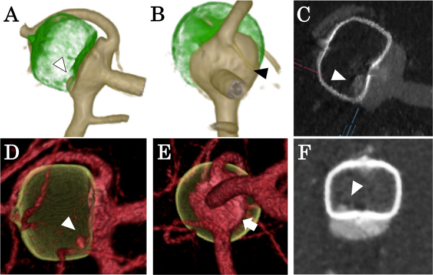
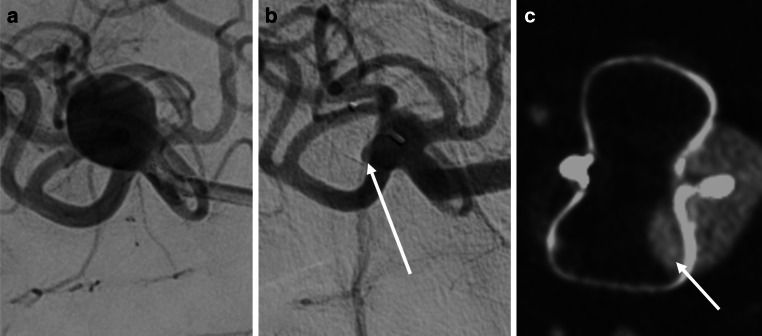
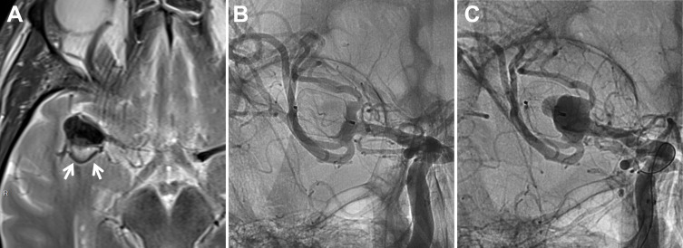
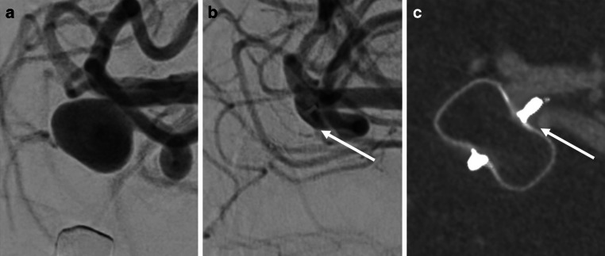

266 — Theo dõi sau WEB & thiết bị rối loạn dòng nội túi: thang BOSS, co rút lưới, "tắc giả"
Tags: pattern:tai-phat pattern:ton-du pattern:co-rut-thiet-bi pattern:ngam-thuoc-trong-luoi vung:nao score:BOSS protocol:DSA protocol:CTA-phan-giai-cao protocol:CBCT-tinh-mach protocol:MRA
Mức chắc chắn (certainty): tổng hợp y văn (literature synthesis) — đoàn hệ 247 bệnh nhân / 266 túi phình theo dõi tới 2024 định nghĩa đầy đủ thang BOSS và tỉ lệ tắc theo mốc thời gian (Clin Neuroradiol 2026, PMC13319165); 405 túi phân tích co rút lưới WEB đa trung tâm (Neurosurg Rev 2025, PMC11850463); 54 lần chụp đối chiếu CTA phân giải cao với DSA (J Neurointerv Surg 2026, PMC13217054); 16 túi đối chiếu CBCT tĩnh mạch với DSA (Clin Neuroradiol 2026, PMC13009025); 1.303 bệnh nhân trong đó 26 túi huyết khối một phần (WorldWideWEB, J Neurointerv Surg 2026, PMC13217109). Không có thử nghiệm ngẫu nhiên nào so sánh các chiến lược theo dõi.
Câu chốt: WEB không để lại stent trong lòng mạch mẹ — vì vậy không đọc tồn dư bằng RROC (Raymond–Roy) hay OKM (O'Kelly–Marotta) như với coil/flow diverter, mà phải dùng BOSS (Bicêtre Occlusion Scale Score). Ba câu hỏi ở mọi lần theo dõi: (1) thuốc cản quang nằm Ở ĐÂU — trong lưới (BOSS 1), ở cổ (BOSS 2), hay quanh thân lưới (BOSS 3)? (2) khoảng cách 2 marker của WEB có NGẮN LẠI (co rút) không? (3) có ngấm thuốc mới ở cổ so với phim ngay sau can thiệp không? Sai lầm hay gặp: gọi BOSS 1 là "thất bại" và can thiệp lại, trong khi đa số ổn định và tự tắc dần; chiều ngược lại là bỏ qua co rút lưới độ nặng — yếu tố dự báo can thiệp lại mạnh nhất.
1. Tổng quan bệnh học – cơ chế hình ảnh
1.1 WEB là gì và vì sao hình ảnh "khác coil"
- WEB (Woven EndoBridge, Terumo Neuro) là lưới nitinol dệt hình chiếc trụ/cầu, thả hoàn toàn trong túi phình, không có stent hay bóng nong ở mạch mẹ. Chỉ định kinh điển: túi phình ngã ba mạch não (bifurcation) có tỉ lệ vòm/cổ < 2 hoặc cổ ≥ 4 mm (túi "cổ rộng").
- Cơ chế: lưới chắn ngay mặt cổ từ bên trong túi → làm giảm vận tốc và tạo xoáy trong túi → ứ trệ → huyết khối → tổ chức hóa. Vì không có kim loại trong lòng mạch mẹ, bệnh nhân thường chỉ cần một thuốc kháng kết tập tiểu cầu (SAPT) thay vì DAPT — đây là lợi điểm chính so với stent-assisted coiling/flow diverter.
- Hệ quả cho hình ảnh: không có "stent trong lòng mạch" để đọc hẹp trong stent, và không có "coil mass" để đọc compaction. Cái cần đọc là lưới và khoảng 2 marker.
1.2 Vật lý: vì sao phải có thang riêng
- Nitinol cản quang mạnh → trên DSA lưới hiện thành khối sáng có hoa văn, trên CTA/CBCT là vòng/đĩa tăng đậm độ kèm beam hardening. Vì lưới có lỗ, một lượng nhỏ cản quang len giữa các sợi là bình thường về mặt cơ học — đó chính là BOSS 1, khác hoàn toàn "túi còn thông".
- Ba vị trí cản quang cần tách:
- Trong lưới (giữa các sợi, sát 2 marker) → BOSS 1;
- Ở cổ, ngoài lưới → BOSS 2 (neck remnant);
- Giữa thành túi và mặt ngoài lưới → BOSS 3 (aneurysm remnant).
- Co rút lưới (shape modification): định nghĩa % giảm khoảng cách giữa marker xa và marker gần, đo giữa DSA lúc can thiệp và lần chụp cuối. Cơ chế được cho là co cục huyết khối trong lưới khi tổ chức hóa; dòng máu mạnh tiếp xúc làm co nhiều hơn. Co rút kéo mặt lưới ra khỏi cổ → hở cổ → tái thông.
- Vì sao CTA có thể "bỏ sót" BOSS 0′: 0′ là lớp cản quang rất mỏng trong hốc gần (proximal recess) sát marker gần; trên CTA phân giải cao, hiệu ứng thể tích riêng phần (partial volume) làm lớp mỏng này hòa vào nitinol → đọc thành BOSS 0. Đây là nguồn sai lệch duy nhất trong nghiên cứu đối chiếu (PMC13217054).
1.3 Ngưỡng định lượng trụ cột
| Đại lượng | Con số | Nguồn |
|---|---|---|
| Tắc hoàn toàn ngay sau can thiệp (BOSS 0/0′) | 62,0% (266 túi) | PMC13319165 |
| Tắc hoàn toàn 1 năm | 67,0% (n = 188) | PMC13319165 |
| Tắc hoàn toàn 3 năm | 75,6% (n = 119) | PMC13319165 |
| BOSS 2 (tồn dư cổ) 1 → 3 năm | 12,8% → 10,1% (giảm dần = huyết khối tiến triển) | PMC13319165 |
| Can thiệp lại (toàn bộ) | 12,8%, trung vị 319 ngày, 25% ca > 5 năm | PMC13319165 |
| Nhóm theo dõi ≥ 5 năm (n = 66) | 18,2% can thiệp lại; 84,6% còn BOSS 0/0′ bền | PMC13319165 |
| Co rút lưới nhẹ / nặng | 31,4% / 10,1% (405 túi) | PMC11850463 |
| Co rút nặng → tắc đủ / can thiệp lại | 70,7% vs 86,6%; 26,8% vs 8,1%; OR 4,93 (1,74–13,8) | PMC11850463 |
| Túi huyết khối một phần → can thiệp lại | 38,5% vs 7,0%, OR 3,64 (1,28–10,1) | PMC13217109 |
| WEB-IT (đối chứng lịch sử) | tắc đủ 1 năm 85,6%, tái thông 11,5% từ 6 tháng → 1 năm, can thiệp lại 9,8% | PMC11850463 |
| Gộp 29 nghiên cứu | can thiệp lại ~8,6% (6,5–10,9) | PMC13319165 |
| Góc dòng vào (inflow angle) ở nhóm can thiệp lại | 152,7° ± 19,1° vs 142,3° ± 24,4° (p = 0,006) | PMC13319165 |
| Đường kính WEB ở nhóm can thiệp lại | 7,9 ± 2,0 mm vs 5,6 ± 1,9 mm (p < 0,001) | PMC13319165 |
2. Mẫu hình + chẩn đoán phân biệt (gamut)
2.1 Thang BOSS — đọc đúng từng bậc
| Bậc | Nghĩa | Cản quang ở đâu | Xử trí điển hình |
|---|---|---|---|
| 0 | Tắc hoàn toàn | Không thấy trong túi | Theo dõi |
| 0′ | Tắc hoàn toàn + ngấm hốc gần | Lớp mỏng sát marker gần, không vào thân túi | Theo dõi (bậc "gần như tắc") |
| 1 | Ngấm trong lưới | Giữa các sợi, sát 2 marker | Theo dõi nếu không đổi/xấu đi |
| 2 | Tồn dư cổ | Ngoài lưới, ngay mặt cổ | Theo dõi; can thiệp lại nếu tăng |
| 3 | Tồn dư thân túi | Giữa thành túi và mặt ngoài lưới | Thường can thiệp lại |
| 1 + 3 | Phối hợp | Cả trong lưới và quanh thân | Can thiệp lại |
- Gộp phân tích: 0 và 0′ = tắc hoàn toàn; 1, 2, 3, 1+3 = chưa tắc hoàn toàn (cách gộp này là chuẩn của PMC13319165 và PMC13217054).
2.2 Gamut theo "cản quang nằm ở đâu"
- Trong lưới, không đổi qua nhiều lần chụp → BOSS 1 bền — hiện tượng "tắc giả" (pseudo-occlusion) đã mô tả; không phải chỉ định can thiệp lại nếu thể tích không tăng.
- Trong lưới + xuất hiện mới sau 6 tháng → nghi co rút lưới đã mở đường vào; so khoảng cách marker với phim ngay sau can thiệp.
- Ở cổ, hình chỏm lồi (convex) → BOSS 0′ nếu chỉ là hốc gần; BOSS 2 nếu là chỏm thật ở cổ.
- Quanh thân lưới, hình lưỡi liềm → BOSS 3 — tái thông thật.
- Ở cổ + quanh thân cùng lúc → BOSS 1+3 (ví dụ PMC13217054 Hình 2).
2.3 Gamut theo bối cảnh túi phình
- Túi huyết khối một phần (partially thrombosed): nguy cơ cao nhất — 38,5% can thiệp lại; trên T2 thấy khối huyết khối trong túi (tín hiệu hỗn hợp), DSA ngay sau can thiệp có thể "đẹp" nhưng tái thông quanh cổ trong 3 tháng (PMC13217109).
- Túi lớn, cổ rộng, có túi con (daughter sac): co rút nặng nhiều hơn; yếu tố dự báo gồm WEB rộng hơn túi (WEB width − aneurysm width), túi con, vị trí ngã ba, ứ trệ dòng ngay sau thả.
- Túi đã điều trị trước đó (5,5% trong đoàn hệ): nền xơ/coil cũ làm mặt cổ không đều — khó đọc BOSS hơn.
3. Bảng so sánh phân biệt (ma trận đối chiếu)
| Thực thể (entity) | Hình ảnh điển hình | Chốt vào (rule-in) | Chốt loại (rule-out) | Gợi ý xác nhận |
|---|---|---|---|---|
| Tắc hoàn toàn (BOSS 0) | Lưới đậm độ đều, không cản quang trong túi, không tồn dư cổ | Không ngấm ở mọi thì, mọi bình diện | Có lớp mỏng sát marker gần → 0′, không phải 0 | DSA 3D + CBCT |
| BOSS 0′ (hốc gần) | Chỏm lồi nhỏ sát marker gần, không lan vào thân túi | Chỉ khu trú ở hốc gần, bờ lồi ra ngoài | Ngấm lan vào thân túi → BOSS 3 | DSA 3D; CTA dễ đọc nhầm thành 0 |
| BOSS 1 (ngấm trong lưới) | Hoa văn cản quang giữa các sợi, hình vuông/góc cạnh theo lưới | Bờ trong theo hình lưới, không vượt mặt cổ | Cản quang ngoài mặt lưới → 2 hoặc 3 | CBCT tĩnh mạch (κ 1,0 với DSA) |
| BOSS 2 (tồn dư cổ) | Chỏm cản quang ngay mặt cổ, ngoài lưới | Nằm giữa lưới và động mạch mẹ, không có thành túi bao ngoài | Có thành túi bao quanh → BOSS 3 | DSA 3D xoay |
| BOSS 3 (tồn dư thân) | Lưỡi liềm cản quang giữa thành túi và mặt ngoài lưới | Có thành túi bao ngoài, lan ra ngoài chu vi lưới | Chỉ ở cổ → 2 | DSA + so phim ngay sau can thiệp |
| Co rút lưới (shape modification) | Khoảng 2 marker ngắn lại; lưới "dẹt" theo trục | Giảm ≥ ngưỡng % khoảng marker so với phim gốc; co rút nặng = nhóm nguy cơ | Khoảng marker không đổi → không phải co rút | Đo marker trên DSA/CBCT cùng bình diện |
| Túi huyết khối một phần | T2: huyết khối trong túi; DSA sau thả "sạch" nhưng tái thông sớm | T2 có khối trong túi + tái thông quanh cổ ≤ 3 tháng | Túi không huyết khối, tắc bền → theo dõi thường | MRI T2 trước can thiệp + DSA 3 tháng |

Túi phình động mạch não giữa phải, WEB SL 11/6, chụp 1 năm sau can thiệp. A–C: DSA (3D xoay + CBCT) — tồn dư ở cổ (đầu mũi tên đen) và trong lưới (đầu mũi tên trắng) = BOSS 1+3. D–F: CTA phân giải cao — cũng thấy tồn dư cổ (mũi tên trắng) và trong lưới, đồng thuận với DSA. Nguồn: PMC13217054, CC BY-NC 4.0.3.1 Dấu hiệu phân biệt tinh
- Bờ trong của cản quang: nếu bờ trong theo hình lưới (vuông, góc cạnh) → cản quang trong lưới (BOSS 1). Nếu bờ theo thành túi (cong tròn) → BOSS 3.
- So với phim NGAY sau can thiệp là bắt buộc: "tồn dư" chỉ có nghĩa khi mới xuất hiện hoặc tăng; tồn dư có từ đầu và giảm dần là quá trình lành.
- Co rút lưới ≠ tái thông: co rút nhẹ (31,4%) không làm tăng can thiệp lại; chỉ co rút nặng (10,1%) mới gắn với tắc đủ thấp hơn và can thiệp lại gấp ~3 lần.
4. Protocol theo dõi + hệ phân độ
4.1 Lịch chụp (theo PMC13319165)
- 6 tháng: MRA (hoặc DSA khi cần) → 18 tháng: MRA → sau đó theo dõi dài hạn ở nhóm nguy cơ.
- DSA khi: MRA/CTA không kết luận, nghi co rút nặng, hoặc chuẩn bị can thiệp lại.
- Nhóm nguy cơ cao cần theo dõi lâu hơn (≥ 5 năm): túi huyết khối một phần, co rút nặng, tồn dư cổ tăng dần, can thiệp trước 2018/thế hệ WEB cũ.
- Lý do theo dõi dài: 25% ca can thiệp lại trong nhóm ≥ 5 năm xảy ra SAU mốc 5 năm (trung vị 319 ngày nhưng đuôi dài).
4.2 Thay thế không xâm lấn — số liệu đối chiếu
| Phương thức | Đồng thuận với DSA | Ghi chú |
|---|---|---|
| CTA phân giải cao (HR-CTA) | 85,2% (46/54 lần), κ 0,81 (0,69–0,93); phân tích nhị phân κ 1,00 | Mọi ca lệch đều do HR-CTA ĐÁNH GIÁ CAO hơn (bỏ sót 0′); vẫn nhận diện được tồn dư thân |
| CBCT tĩnh mạch (IVCBCT) | κ 1,0 cho cả 2 người đọc (16 ca); liên quan sát viên κ 0,86 | Phân bố BOSS: 0/0′ 50,0%, 1 31,3%, 2 12,5%, 3 6,2% |
| MRA | Không có trong các nghiên cứu này | Dùng trong lịch thực tế; thận trọng artifact ở túi lớn |
flowchart TD
A[Túi phình đã đặt WEB] --> B[So phim NGAY sau can thiệp: BOSS gốc + khoảng cách 2 marker]
B --> C[6 tháng: MRA hoặc DSA]
C --> D{BOSS và marker}
D -->|BOSS 0/0-prime, marker không đổi| E[18 tháng MRA, sau đó theo dõi thường]
D -->|BOSS 1 đơn thuần, không đổi| F[Theo dõi 6-12 tháng: BOSS 1 bền không phải thất bại]
D -->|BOSS 2 hoặc 3, hoặc 1+3| G[So với phim gốc: tồn dư MỚI hay TĂNG?]
G -->|Không tăng| F
G -->|Tăng hoặc co rút nặng| H[DSA ± CBCT, cân nhắc can thiệp lại]
D -->|Nghi co rút| I[Đo lại khoảng marker cùng bình diện]
I -->|Giảm rõ| H
I -->|Không đổi| F
5. Biến thể bình thường và cạm bẫy
- BOSS 1 "bền" không phải thất bại: ngấm trong lưới có thể tồn tại nhiều năm mà không tăng thể tích — can thiệp lại là quá tay. Chỉ hành động khi tăng dần hoặc kèm co rút nặng.
- HR-CTA chỉ sai một chiều: vì bỏ sót lớp mỏng ở hốc gần (0′), CTA không được dùng để loại trừ BOSS 0′. Nếu cần chắc chắn (túi vừa vỡ, bệnh nhân trẻ), DSA 3D/CBCT.
- Co rút lưới đọc sai vì khác bình diện: khoảng marker phải đo trên cùng góc chụp; chụp lệch 10–20° làm khoảng cách "đổi" giả tạo.
- Túi huyết khối một phần "đẹp" ngay sau thả: dòng vào túi đã bị chặn một phần bởi huyết khối cũ → ảnh hưởng thấp giả; phải chụp lại 3 tháng, không đợi 6–12 tháng.
- Hiệu ứng học việc (learning curve) trộn với cải tiến dụng cụ: can thiệp lại 21,1% trước 2018 vs 7,2% từ 2018 (HR 0,31) phản ánh cả kinh nghiệm và thế hệ WEB17, không chỉ "bệnh nhân dễ hơn" — đừng dùng số này để tiên lượng cá nhân.
- Sai lầm "đọc theo RROC": RROC mô tả coil mass; với WEB, "Class I/II/III" không tương ứng — dùng RROC sẽ gộp BOSS 1 với tái thông thật.
6. Tự lượng giá — Blind Quiz
Ca 1 — Nữ 58 tuổi, túi phình động mạch não giữa phải đã đặt WEB 1 năm, chụp theo dõi. Mô tả trước khi mở đáp án.
- Gợi ý lâm sàng: không triệu chứng, túi phình chưa vỡ, WEB SL 11/6.
- Câu hỏi: Cản quang nằm ở đâu? BOSS mấy? CTA có đồng thuận không?
Bấm để hiện đáp án (findings + chẩn đoán)
- Findings: tồn dư ở cổ (đầu mũi tên đen ở A, mũi tên trắng ở E) và trong lưới (đầu mũi tên trắng ở C, F) → BOSS 1+3.
- Chẩn đoán: chưa tắc hoàn toàn, có tồn dư cả trong lẫn quanh lưới; CTA phân giải cao đồng thuận với DSA ở ca này.
- Vì sao: lưới có lỗ nên cản quang len giữa sợi (BOSS 1) cộng thêm chỏm ở cổ (BOSS 3) — hai thành phần phải mô tả riêng, không gộp thành "tái thông".
- Nguồn ảnh: Suyama K et al, J Neurointerv Surg 2026, Fig. 2 — PMC13217054, CC BY-NC 4.0.
Ca 2 — Nam 64 tuổi, túi phình ngã ba động mạch não giữa, chụp 6 tháng sau WEB.

- Câu hỏi: DSA (b) và CBCT tĩnh mạch (c) cho thấy gì? BOSS mấy? Có cần DSA xâm lấn lặp lại không?
Bấm để hiện đáp án (findings + chẩn đoán)
- Findings: (a) DSA trước đặt; (b) DSA 6 tháng và (c) IVCBCT 6 tháng đều thấy ngấm thuốc tối thiểu trong lưới, không tồn dư cổ → BOSS 1.
- Chẩn đoán: tồn dư trong lưới đơn thuần, chưa cần can thiệp lại — theo dõi.
- Vì sao: IVCBCT đồng thuận hoàn toàn với DSA (κ 1,0) trong 16 ca, nên có thể thay DSA lặp lại ở ca này; liên quan sát viên IVCBCT κ 0,86.
- Nguồn ảnh: Tajima Y et al, Clin Neuroradiol 2026, Fig. 1 — PMC13009025, CC BY 4.0.
Ca 3 — Nữ 51 tuổi, túi phình huyết khối một phần đã đặt WEB; chụp ngay sau thả "rất sạch", 3 tháng sau tái khám.

- Câu hỏi: Vì sao ảnh ngay sau can thiệp "đẹp" mà vẫn phải chụp sớm? Findings ở C?
Bấm để hiện đáp án (findings + chẩn đoán)
- Findings: (A) T2 trục: huyết khối trong túi (mũi tên); (B) DSA ngay sau thả: chỉ còn rất ít dòng vào túi; (C) DSA 3 tháng: tái thông rõ quanh vùng cổ.
- Chẩn đoán: tái thông sớm của túi phình huyết khối một phần — nhóm có 38,5% can thiệp lại (vs 7,0%), OR 3,64; tỉ lệ RROC IIIa/b 38,5% vs 9,9%.
- Vì sao: huyết khối cũ trong túi làm giảm thể tích dòng vào ngay sau thả → ảnh hưởng "tắc giả"; WEB không phải lựa chọn đầu tay cho thể này.
- Nguồn ảnh: Saliou G et al (WorldWideWEB), J Neurointerv Surg 2026, Fig. 1 — PMC13217109, CC BY-NC 4.0.
Ca 4 (cạm bẫy) — Cùng bệnh nhân, hai người đọc khác nhau.

- Câu hỏi: Vì sao hai người đọc ra 0 và 0′? Điều này ảnh hưởng quyết định gì?
Bấm để hiện đáp án
- Findings: cả DSA (a) và IVCBCT (b) đều có lớp ngấm mỏng ở hốc gần (mũi tên trắng).
- Chẩn đoán: BOSS 0′ — một người đọc gọi 0 (bỏ lớp mỏng), người kia gọi 0′.
- Vì sao quan trọng: 0 và 0′ cùng nhóm tắc hoàn toàn khi phân tích gộp, nhưng ghi nhận 0′ là nguồn lệch duy nhất giữa CTA và DSA → không được dùng một lần đọc CTA để kết luận "tắc hoàn toàn" ở ca sát ngưỡng.
- Nguồn ảnh: Tajima Y et al, Clin Neuroradiol 2026, Fig. 3 — PMC13009025, CC BY 4.0.
Bài liên quan chéo
- 200 – Tổng quan hệ Thần kinh
- 257 – Theo dõi & tái phát sau can thiệp túi phình não: RROC/OKM, coil compaction, artifact MRA — thang của coil/flow diverter; bài này là thang riêng cho WEB
- 207 – Phình mạch nội sọ chưa vỡ: PHASES/ELAPSS/UIATS — quyết định điều trị ban đầu
- 248 – Can thiệp nội mạch giả phình & bóc tách động mạch cổ/đốt sống
- 241 – HR-vwMRI đọc ngấm thành mạch — đánh giá nguy cơ trước can thiệp
Không dùng để chẩn đoán độc lập khi chưa có người hướng dẫn.